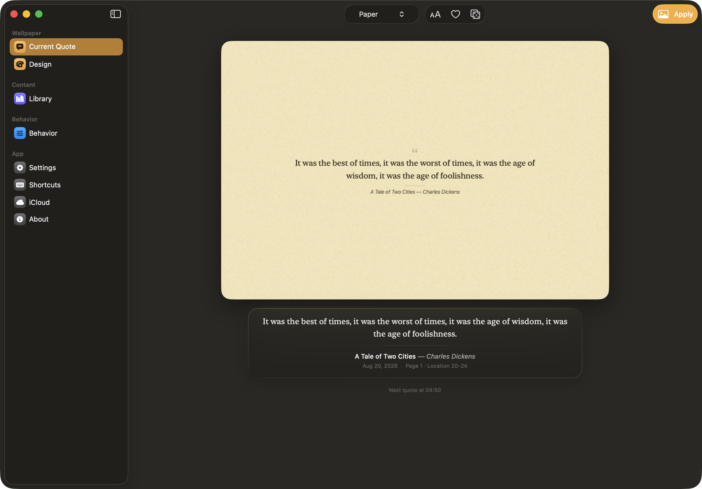

Free and open source · macOS 26 or laterÜcretsiz ve açık kaynak · macOS 26 veya üzeri
KindleWall reads that file and puts one passage at a time on your desktop. Your own books, in your own words — not a quote database. KindleWall o dosyayı okur ve her seferinde bir pasajı masaüstüne koyar. Kendi kitapların, kendi seçtiğin cümleler — hazır bir alıntı veritabanı değil.
Signed and notarized. No account, no sign-up, no telemetry. İmzalı ve notarize edilmiş. Hesap yok, kayıt yok, telemetri yok.
It was the best of times, it was the worst of times, it was the age of wisdom, it was the age of foolishness.
Six stylesAltı stil
Each one differs on four axes — surface, value, temperature, typographic character — and brings its own typeface and its own mark. Her biri dört eksende ayrışır: yüzey, açıklık, sıcaklık ve tipografik karakter. Her stil kendi yazı karakterini ve kendi işaretini getirir.
The set was cut from eight to six because three of the originals were the same flat grey wearing different names. Küme sekizden altıya indirildi; çünkü üçü, farklı adlar taşıyan aynı düz griydi.
Typography is not locked to the style — font, size, decoration and colours are all yours to override afterwards. Tipografi stile kilitli değil — yazı karakteri, boyut, dekorasyon ve renkler sonradan tamamen senin denetiminde.
Dynamic wallpaperDinamik duvar kağıdı
Turn it on and KindleWall writes a HEIC with six frames, one for each moment of the day, tied to the real solar position where you are. The same passage warms toward sunset and cools at night. Aç, KindleWall altı kareli bir HEIC yazsın — günün her anı için bir kare, bulunduğun yerdeki gerçek güneş konumuna bağlı. Aynı pasaj gün batımına doğru ısınır, gece soğur.
Time of day changes the light in the room, not the ink on the page — so only the surface moves. And when a surface drifts somewhere its own ink could no longer be read, the app swaps to light ink rather than letting the contrast fall below 4.5:1. Günün saati odadaki ışığı değiştirir, sayfadaki mürekkebi değil — bu yüzden yalnızca yüzey hareket eder. Bir yüzey kendi mürekkebinin okunamayacağı yere kaydığında ise uygulama kontrastı 4,5:1'in altına düşürmek yerine açık mürekkebe geçer.
These are the real colours: the swatches above are the Paper style's surface run through the app's own Core Image chain, one swatch per frame. Move the sun control in the hero to watch any style walk through them. Bunlar gerçek renkler: yukarıdaki örnekler Kağıt stilinin yüzeyinin uygulamanın kendi Core Image zincirinden geçmiş hâli, her kare için bir örnek. Herhangi bir stilin bu fazlarda nasıl gezindiğini görmek için yukarıdaki güneş denetimini kaydır.
Getting startedBaşlarken
Setup is a file picker and two choices. After that KindleWall runs in the menu bar and you only come back when you want to change something. Kurulum bir dosya seçici ve iki tercihten ibaret. Sonrası menü çubuğunda çalışır; yalnızca bir şey değiştirmek istediğinde geri dönersin.
It mounts as a drive. The file is at documents/My Clippings.txt — no cable handy? Any copy of that file works.Bir sürücü olarak bağlanır. Dosya documents/My Clippings.txt yolunda. Kablo yoksa o dosyanın herhangi bir kopyası da olur.
Drag it in or pick it. English and Turkish Kindle formats both parse; bookmarks and duplicates are dropped on the way in.Sürükle ya da seç. İngilizce ve Türkçe Kindle biçimlerinin ikisi de okunur; yer imleri ve tekrarlar girişte elenir.
Every 30 minutes through to once a day. It shuffles without repeating until the pool runs out.Otuz dakikada birden günde bire kadar seçebilirsin. Havuz tükenene dek tekrarsız karıştırır.

The rest of itGeri kalanı
Everything below is off in the corner doing its job. None of it needs an account, and none of it asks you anything. Aşağıdakilerin hepsi bir köşede kendi işini yapar. Hiçbiri hesap istemez, hiçbiri sana bir şey sormaz.
Every book, one book at a time, only the books you pinned, or only your favourites.Tüm kitaplar, sırayla tek kitap, yalnızca sabitlediklerin ya da yalnızca favorilerin.
A global hotkey or the Services menu turns selected text in any app into a clipping — books you did not read on a Kindle get in too.Genel bir kısayol ya da Servisler menüsü, herhangi bir uygulamadaki seçili metni alıntıya çevirir — Kindle'da okumadığın kitaplar da girer.
Close the window and it keeps going. Next passage, favourite, pause, change style — all from the menu bar.Pencereyi kapat, çalışmaya devam eder. Sonraki pasaj, favori, duraklat, stil değiştir — hepsi menü çubuğundan.
Applied to all screens, and to every Space — either the moment it changes, or the first time you visit one.Tüm ekranlara ve tüm Space'lere uygulanır — ya değiştiği anda ya da o Space'e ilk gidişinde.
Kindle titles come in messy. Fix a title or author by hand, or let the app look it up. Covers are fetched for the shelf.Kindle başlıkları dağınık gelir. Başlığı ya da yazarı elle düzelt; istersen uygulamaya arattır. Raf için kapaklar getirilir.
Import the same file again after a month of reading and only the new highlights are added. Favourites survive, because a clipping's identity comes from its text, not from when it was read.Bir ay okuduktan sonra aynı dosyayı yeniden aktar; yalnızca yeni vurgular eklenir. Favoriler korunur, çünkü bir alıntının kimliği metninden gelir, ne zaman okunduğundan değil.
Off unless you turn it on, and it uses your own private CloudKit database — there is no server on the other end of it.Sen açmadıkça kapalı ve kendi özel CloudKit veritabanını kullanır — diğer uçta bir sunucu yok.
Sparkle, with EdDSA-signed releases. Or brew upgrade, if that is more your speed.Sparkle ve EdDSA imzalı sürümler. Ya da tercihin oysa brew upgrade.
PrivacyGizlilik
No analytics, no telemetry, and no server operated by this project. That leaves three things worth naming — including one most apps would rather not mention. Analitik yok, telemetri yok ve bu projenin işlettiği bir sunucu yok. Geriye adını koymaya değer üç şey kalıyor — biri, çoğu uygulamanın söylememeyi yeğleyeceği türden.
| WhatNe | Where it goesNereye gider |
|---|---|
| Your highlightsVurguların | Nowhere — unless you switch on iCloud sync, in which case your own private CloudKit database, and nowhere else.Hiçbir yere — iCloud eşitlemeyi açmadıkça. Açtığında kendi özel CloudKit veritabanına gider, başka hiçbir yere. |
| Book titlesKitap adları | Google Books and Open Library, as search queries, when the library screen fetches cover art. Nothing else about you is attached — but the titles themselves say something about what you read, so it is worth knowing.Kütüphane ekranı kapak görseli getirirken arama sorgusu olarak Google Books ve Open Library'ye. Sana dair başka hiçbir şey eklenmez — ama başlıkların kendisi ne okuduğun hakkında bir şey söyler, bu yüzden bilmeye değer. |
| Update checksGüncelleme denetimi | GitHub, to read the appcast.Appcast'i okumak için GitHub'a. |
The source is on GitHub under GPL-3.0, so none of the above has to be taken on trust. Kaynak kod GPL-3.0 ile GitHub'da, yani yukarıdakilerin hiçbirini güvene dayanarak kabul etmek zorunda değilsin.
InstallKurulum
Requires macOS 26 (Tahoe) or later. The app is in English and Turkish and follows your system language. macOS 26 (Tahoe) veya üzeri gerekir. Uygulama İngilizce ve Türkçedir, sistem dilini izler.
brew trust is required by Homebrew 6 for third-party taps.
Homebrew 6, üçüncü taraf tap'ler için brew trust ister.
Or take the signed, notarized DMG from Releases and drag it to Applications. Ya da imzalı ve notarize edilmiş DMG'yi Sürümler'den alıp Uygulamalar'a sürükle.
macOS can give the app a language of its own under System Settings → General → Language & Region → Applications. macOS'ta Sistem Ayarları → Genel → Dil ve Bölge → Uygulamalar altından uygulamaya ayrı bir dil verebilirsin.
Put it somewhere you will see it.Onu göreceğin bir yere koy.